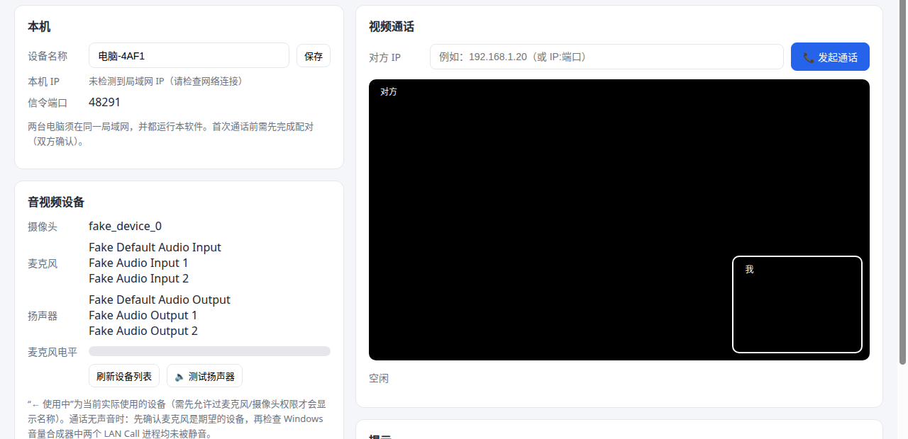
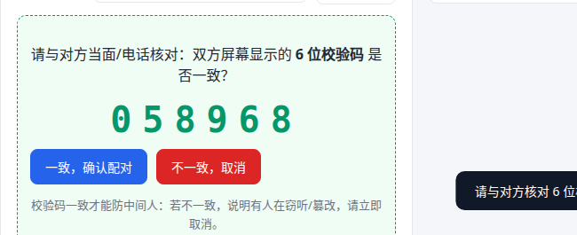
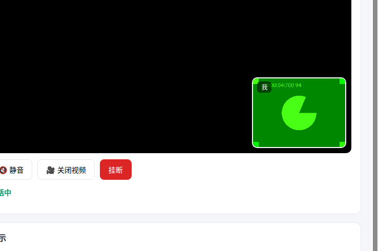

软件界面
以下为 v0.2.4 测试版在测试环境中的真实界面截图（使用系统虚拟音视频设备，实际使用时显示真实设备名称）。



三步开始使用
两台电脑须在同一局域网（同一 Wi-Fi 或交换机），各安装一份 LAN Call。
安装并运行
在两台 Windows 10/11（64 位）电脑上分别安装并运行。首次运行 Windows 防火墙可能弹窗，请勾选"专用网络"并允许访问。
安全配对
一方输入对方 IP 发起配对。双方屏幕各显示 6 位校验码——当面或电话核对，一致后各自点"确认配对"。配对一次，长期有效。
发起通话
输入对方 IP 点"发起通话"，对方接听即建立一对一加密视频通话。支持静音、关闭视频；挂断即结束，不留存任何记录。
核心特点
完全离线运行
信令与媒体只走局域网，不依赖公网 STUN/TURN，不经过任何外部服务器。断开互联网后仍可通话。
端到端加密
配对采用 X25519 ECDH 密钥协商；每次通话派生独立会话密钥，AES-256-GCM 加密，防重放、防反射。
无账号、无统计
不注册账号，不收集、不上传、不保存任何音视频与通话记录。配对密钥只保存在本机。
安全与隐私
局域网通信默认不可信——LAN Call 按此原则设计。
加密与认证
- 配对：X25519 ECDH 临时密钥协商，双方屏幕比对 6 位 SAS 校验码，确认后互发绑定完整 transcript 的确认消息
- 通话：每次建连双向 nonce 认证，HKDF 派生双向独立会话密钥，AES-256-GCM 加密
- 防重放、防反射：帧序号严格递增并参与 AAD，方向标识校验，违例即断开并告警
- 长期密钥永不进入渲染进程；配对码为一次性显示，用后即清
下载与完整性校验
当前为测试版（v0.2.4）。下载安装包需要联网；安装完成后，软件运行完全离线。
安装包：LAN-Call-Setup-0.2.4-win-x64.exe · 136 MB · Windows 10/11 64 位
SHA256 校验
1c5926206dce64e44787f20839005939098306ef882449482224c02360dfeada
Windows PowerShell 校验方法（在安装包所在目录运行）：
Get-FileHash .\LAN-Call-Setup-0.2.4-win-x64.exe -Algorithm SHA256
将输出与上方公布值逐字比对，完全一致再安装。
测试版已知限制
- 仅支持 Windows 10/11 64 位，且仅 Windows ↔ Windows 通话
- 两台电脑须在同一局域网；暂无自动发现，需手动输入对方 IP
- 摄像头同一时间只能被一个程序使用；麦克风/扬声器可在设备卡片中切换与测试
- 通话功能已在单机双开与真机环境验证；两台独立电脑、断网建连、长时间通话等场景仍在测试中
常见问题
提示"无法连接"（ECONNREFUSED）怎么办？
确认对方软件已打开、IP 填写正确、两人连的是同一个 Wi-Fi/交换机；首次运行请在防火墙弹窗中勾选"专用网络"。注意软件只监听局域网网卡，不要填 127.0.0.1。
双方 6 位校验码不一致？
说明可能有人在中间篡改，请立即取消，不要继续。检查双方是否连入了同一个可信局域网，排除后再重新配对。
对方听不到我的声音？
先看主界面"麦克风电平"条：说话时若有跳动，说明麦克风工作，对方检查扬声器与音量；若无跳动，在"音视频设备"卡片中切换到正确的麦克风。
断开互联网还能用吗？
可以。软件只使用局域网，不依赖互联网（下载安装包时需要联网，安装后运行完全离线）。
更多问题见技术支持，或发邮件至 support@haicechina.com。